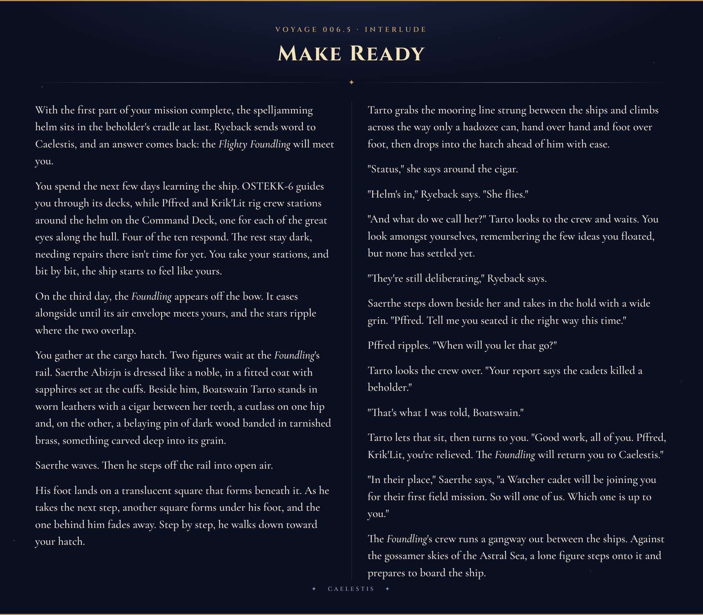

- Three clockwork horrors climb out of the shaft into the cargo hold. Ryeback shoots one with his hand cannon, Pffred takes two with daggers, Krik'Lit meets them with his pincers, and Sol jinxes one and cuts it down.
- A wail rises from below and the horrors go back down. Its mother is calling for them, says Krik'Lit.
- Ryeback asks whether the crew can finish the mission or whether he should call Saerthe and Tarto. Tumak says they are fully capable.
- Told the beholder was taken care of, Ryeback takes it to mean they killed it.
- Ostekk-6 explains that most things leave the ship through the cargo hold, the expulsion is worked from the Command Deck, and nothing aboard puts out a fire. The plan: burn the growth, and put the behir out through the hold.
- Tumak names Boogie second in command and tells the crew to vote on it.
- Bartholomew strings noisemakers around the garden shaft. On the first watch he follows Miken into the hallway and catches him speaking into a sending stone.
- Miken says he was saying hello to his family, grows sharp, then apologizes. He is the only one of Veena's crew not badly hurt.
- On the last watch Gregory sees the behir's head come up over the garden shaft.
- Sol speaks for the crew. Through Krik'Lit, the behir asks for a device on the Command Deck, the containment engine, fourth series, for its master Ostekk. If they bring it out, it will leave.
- It warns that the flowers are deadly and that something in the garden reveals them. It names itself Ostekk-10.
- What stops either side from killing the other, says Krik'Lit, is mutual trust.
- Down the garden shaft lies Vaelorix's greenhouse of research specimens, with a stalk of unopened velvet-blue buds at its heart.
- Tumak takes a half-dissected flower glowing pink inside its bud.
- Bartholomew breathes a newly bloomed flower whose scent he cannot place. His body wants to become something he has never been. He seals it in a container.
- On the Command Deck, Gregory feeds his magic into Tumak's flower and its spores show the wisps all through the room.
- Gregory reads the roots by touch: the flowers make both the wisps and the field that kills magic, and three fields overlap at the centre.
- Sol, Tumak, Casey and Boogie cut down the side flowers one by one. Casey brings down the ceiling flower from where he lies.
- Bartholomew, as an ape, tears the great flower from the beholder's body with its roots alight. Magic comes back.
- Gregory's pull leads him to a small iron lamp between two eyestalks: the containment engine, built by Ostekk and studied by Vaelorix.
- Three charges a day, each mending a body, constructs best. A charge sets Ostekk-6's body rebuilding.
- Ostekk-6 will travel with the crew. He had not known Ostekk-10 existed. The lamp goes into Tumak's bag of holding.
- The helm is carried to the Command Deck and Pffred and Krik'Lit begin fitting it.
- Ostekk-10 returns. Tumak plans the lie in the crew's minds and tells it nothing was found. What is here has not left, it answers, and searches the ship.
- Bartholomew strikes the expulsion and the behir goes out through the cargo hold. Nice job, cadets, says Ryeback.
Sol had stayed behind. While the others went down the shaft he worked beside Winston Ryeback in the cargo hold, shifting crates and laying out a station for the food, with the helm on its dolly and the rest of the crew around them: Pffred, the plasmoid in the knotted kerchief, who kept to himself; Krik'Lit, who sat apart and muttered in small screeches; Miken; and the deckhands.
A screeching came up out of the shaft. Three clockwork horrors climbed over its lip, took in the hold, and rushed them. Ryeback bellowed the deckhands into cover, drew a hand cannon, and shot one of the horrors in the chest. Pffred produced a set of daggers and went at two of them at once. Krik'Lit met them with his pincers. Sol ran in without stopping to think. He chose the one Ryeback was shooting, laid a jinx on it, and cut at it as it slowed.
Then a great mechanical wail rose from below, and everyone stopped, crew and horrors alike.
"Its mother is calling for them," said Krik'Lit.
The three horrors turned and went back down the shaft. Miken said he would go and see that the others were all right, told the rest to stay where they were, and went down after them. Sol watched the shaft. Some thirty or forty minutes later the crew came back up it with Miken, more battered than when they had left.
Casey found a corner, dropped onto his back, and lay there. Ryeback came over and looked at them. Had they fought whatever had been doing the screeching?
"I wouldn't call it a fight," said Bartholomew.
"I hate this place," said Casey, from the floor.
Ryeback took that as a yes. Then he asked the question that was his to ask. Did they think they could complete this mission, or did he call Saerthe and Boatswain Tarto? Casey's tail pointed at Tumak.
Tumak said they were fully capable. They needed a few hours first. Nobody had set them a deadline; the only clock anyone could name was H'Catha itself, where others would be after the adamantine. All that was left was to put the helm where it went.
Sol had not heard about the beholder. There was one on the ship, they told him, a dead one. "We took care of it," said Tumak. Ryeback asked whether they had killed it. It was dead, Tumak said. Ryeback supposed that in that case he need not worry.
Gregory brought up the dragon. A mechanical one, the others added, and Ryeback told them they had to learn to lead with the good news, because when someone said dragon first he assumed they were all dead. He guessed it was what Krik'Lit had called the mother. Had they killed that too? They had not.
Tumak asked Ostekk-6 whether the ship had doors that could be opened to flush something out. Most things were ejected from here, the cargo hold, said Ostekk-6. The ship was stone, and Master Vaelorix had had little use for exits. It could potentially be done from the Command Deck, where the previous master was currently located. The crew asked whether anything aboard would put out a fire. Nothing would. A stone ship would not burn, and they liked that. By the end of it they had the outline of a plan: burn the growth off the Command Deck, and put the mother out through the hold.
Tumak had one more question for Ostekk-6, which was whether there was a privy. Ostekk-6 was unaware of how the previous master had relieved himself, but supposed it would have been in his own quarters. Tumak went to find a side room. On his way he named Boogie his second in command and told the others to vote on it.
Ryeback set up in one of the larger chambers and got a small fire going. Bartholomew rigged planks and rope into three noisemakers, two across the hallway that led to the garden shaft and one in a ring around the shaft mouth itself. Sol took the shaft they had gone down before. Supper was burgers on toasted brioche with vegetables where the fries should have been, because, Ryeback said, a body needed its roughage with its protein.
Sol and Bartholomew had the first watch. Ryeback dozed off sitting upright. Two hours in, Miken stirred, got up, and walked into the hallway toward the garden shaft. The noisemakers stayed quiet.
Bartholomew followed him as softly as he could. He saw Miken hunched over and muttering, in the rhythm of a conversation, and then his own knee struck the line he had strung. Miken spun round. "Oh. Hi, Bartholomew. Everything all right?" He was only stretching his legs, he said. He had never been on a beholder ship before and was having trouble sleeping.
Miken was holding something behind his back, and Bartholomew had seen him speaking into it. It was a sending stone. Sol came up behind them a moment later.
No one in particular, Miken said. Just folks at home. Asked what he was telling them, he wanted to know why it mattered. He was saying hello to his family. Was that a crime? Bartholomew said it was no crime, only odd to do it in the middle of the night when there had been time earlier. Earlier they had been under attack by machines, said Miken, and there was also such a thing as different worlds keeping different hours. It was the first time any of them had heard him be sharp with anyone.
Then he apologized. He had not meant to be rude. He just missed home. Bartholomew said he understood. The part about the hours was true enough. Whether Miken was telling the truth about who was at the other end of the stone, Bartholomew could not say. He was from Veena's crew, and every one of that crew had been badly hurt except him.
Tumak and Casey had the second watch and spent it in an awkward quiet. Tumak was talking to himself. Casey said he could talk to him, if he liked. Tumak said he would talk to Casey when he wanted to talk to Casey, heard how that sounded, and said he was sorry, he was only talked out with captain's business. "You're doing great, though," said Casey.
Gregory took the last watch alone. He tried to wake Boogie for it and Boogie slept on, the face on his shield mild and content. Ostekk-6 sat awake on his borrowed legs. The better part of an hour went by before Gregory heard clanking and clicking from the garden shaft. A serpent's face and one claw came up over the lip and tapped at Bartholomew's traps, and the creature looked the hold over.
Gregory sent Ostekk-6 to wake the others. Ostekk-6 had worked out how to tell the little legs where to go, and went. Krik'Lit was already awake, sorting through his things, and asked what the problem seemed to be.
They gathered behind Gregory, Ryeback grunting his way up out of six hours asleep in a sitting position. The head rested at the lip of the shaft and waited. They had seen it breathe lightning. Now it only waited. Tumak pointed out that it could have killed them already if it had wanted to. Nobody was eager to go and speak to it, and then Sol offered. Bartholomew put a word of guidance on him, Tumak readied a spell, and Casey readied a ward.
Sol had not seen it before: a serpent's snout, horns, claws hooked over the stone, all of it bluish-purple metal, with dull blue eyes that glowed faintly. He knew behirs by reputation, ferocious and territorial. He walked toward it slowly with his chest up. It cocked its head at him and made a string of clicking noises. He raised his open hands and told it he did not understand. It clicked again, looking past him.
Krik'Lit came forward with his pincers raised and open. He might be of service, he said. It was not quite his dialect, but it was close. If he understood correctly, it was saying that it needed their help.
Through Krik'Lit it told them this. It needed a device in command. Then it would leave. The device was a containment engine, fourth series, and it was for its master. Its master was Ostekk. The device was in command and it could not go there. If they brought the device out, it would leave completely.
Sol asked for time and took it back to the crew. They turned it over. Tumak guessed there was something in that room that stopped machines. Gregory had felt sluggish there, and the horrors on that deck stood dead where they had stopped. Ostekk-6 said he had gone to the Command Deck freely before: the plants had not been there then. They had been a specimen Vaelorix was researching. The crew wondered what else they might ask for. A favor owed. An ally. A place on the crew, and its back to carry the helm.
They put more questions through Krik'Lit. What should they watch for? The flowers were deadly. They knew that. Sol pressed, and it gave more: the flowers were hard to perceive, and in the garden, further down, there was something that revealed them. The device was small enough to carry. The ship did not need it to function. It had to go back to its master. Whether it or its master would stand as an ally later, it did not have the capacity to decide. And what would stop it from killing them once it had what it wanted? Krik'Lit answered that one himself. The same held on both sides, he said. What stopped either of them was mutual trust, to finish the task at hand.
Tumak leaned over to Gregory and said he was glad to learn it thought of them as a threat. They had taken out the beholder, Gregory said. Of course it did.
Boogie had one more question. What was its name? Krik'Lit asked, and it clicked an answer. Ostekk-10.
It drew back down the shaft. Krik'Lit looked at the crew. That had been interesting, he said. He had never spoken to a machine before. So the plan was to retrieve the item and trust that it did not kill them.
Ostekk-6 told them the way. The garden lay at the bottom of the garden shaft, and it was where Vaelorix had kept his research specimens. The master's quarters were at the bottom of another.
Casey went first, head down, with no rope, because that was how he climbed. Most of the others simply jumped and trusted Miken to be near, and he was: a charm caught them and they drifted. Gregory moved the anchor and went down a rope. They passed the opening onto the Hollow Deck and looked in. Ostekk-10 lay curled where they had first found it, with three or four clockwork horrors standing dormant around it. Below it the ship's pull turned over. Casey was already climbing and kept climbing. The rest floundered until a rope reached them and he anchored it. Then they passed the Command Deck and its coloured haze, and felt their magic go out for a moment as they went by.
The garden was a lavish greenhouse. Flowers were cultivated along its walls and a bed of grass lay at its centre, and around that stood research tables, instruments for looking closely at seeds, and tools laid out in order. A single will-o'-wisp hung in the air, whole and bright like the ones they had fought in the cargo hold. They left it alone.
Sol saw what the room had been arranged around: a thick stalk carrying several buds that had not yet opened, a deep velvet blue. Someone had been studying it. Tumak went along the tables, where flowers lay dissected with their seeds and stamens taken out. One had been left partway through the work, its roots bare on the tabletop, a faint pinkish glow inside its closed bud and small motes drifting off it. He thought of a dandelion, and put it in his bag.
Bartholomew found a flower that had newly bloomed. Its scent was familiar and he could not place it. When he breathed it in, his body wanted to change, and what it wanted to become was something he had never been. He tried to let it happen. The flower had already given off most of what it had, and it was not enough. He sealed it in one of the garden's containers and kept it.
They came onto the Command Deck from the garden shaft, a different side from the one they had used before. Nothing in it had changed. Ostekk-6 slowed as he crossed the threshold. Gregory felt the same drag, though it left him able to work. The horrors stood where they had stopped.
Gregory felt the other thing too. It was close to magic without being magic: a pull near the centre of the beholder's body, like a single struck note. He had felt that nudge before, on Caelestis.
Hollow wisps showed in the air and were gone, and showed again somewhere else. Tumak handed Gregory the flower from the garden and admitted he had no idea how it worked. Gregory felt it drawing on him, and let some of his magic go into it. The bud opened and breathed out a cloud of pinkish-green spores ten feet across. They clung to everything they touched, the crew included, and to the wisps, whose outlines now stood in the air all around them. The wisps turned toward the crew.
One fastened onto Sol's arm, and Casey cut it away with a dagger that stopped just short of the skin. They learned quickly that a single clean blow burst a wisp. The danger was in letting one take hold. Gregory fed the flower more and the cloud doubled. It showed wisps all through the room, and it settled on the great dark flower over the body and on a second like it that hung from the ceiling directly above. Boogie reached for a blessing and nothing came, so he used his blade. Spells were dead here. What each of them carried in themselves still answered: Casey's conjured daggers, the blades Tumak made from his own mind, Sol's step through starlight.
Tumak had come down with the night's plan in his head. He checked one of the dead horrors for oil and found only a film of it on the joints. He dragged it to the foot of the mound anyway, and then a second, and lit them with a torch and a tinderbox. The machines burned. The flame ran across the great flower and would not take.
The flowers went on making wisps. The one at the centre brightened and let out small lights that hollowed the moment they met the air of the room, and the flowers in the side chambers did the same.
Gregory followed the pull. It came from underneath the body. He pried a saw blade off one of the horrors, climbed down the side of the mound, and tried to cut through the roots, and the saw would not bite. He laid his hand on them and read what he could. The flowers were producing the wisps, and they were also producing the field that killed magic. Where he stood, three fields overlapped, each from a different flower. He shouted it to the others.
Casey climbed the mound and drove a dagger at the base of the great flower. It was like striking a shield. So they went after the others.
Sol stepped through starlight to a large flower grown across the mouth of a shaft. His rapier went in partway and stopped. He took misfortune onto himself to drive it home, and black arcs of it crackled along his arm. Then he dropped his shield, took up his maul, and put radiance through the blow, and the flower went to ash. Tumak threw one of his blades across the room into another. Casey threw daggers, and one of the stars that hung at his shoulder went out in the strike, and sap ran. Boogie cut down a small flower in a side chamber, and Gregory felt one of the three fields wink out. Sol reached another and ran it through, and it withered around a burst of black energy. Casey finished one more with two daggers and his second star. A second field dropped. By then they had noticed that the wisps would not follow anyone out of their own part of the room.
Bartholomew had been watching the great flower. He climbed the mound, and his forearms thickened and his hips sank, and a silverback ape took the flower in both hands and pulled. It moved. The roots lifted out of the body whole, without tearing. Gregory worked the saw blade in underneath as a lever, and a third of the growth came free.
Gregory lit the last of the horrors, and this time the fire began to hold on the roots. Boogie pressed a potion on Tumak.
Two fields were left: one from the flower on the ceiling, pointing down, and one from the great flower, pointing up. Sol threw a javelin thirty feet straight up into the one above. It stuck, sap ran down the shaft, and it dropped back into his hand. Tumak put two blades into the same wound, and the flower sagged on its last few roots. Casey ran up the mound, climbed Bartholomew, and jumped for it. He was on the floor before he knew he had missed. He threw from where he lay. The first dagger fell short. The second nicked a root, and the flower's own weight did the rest. It came down on the mound. Bartholomew and Gregory got mostly clear. Sol set his javelin under it and turned it aside, and it hurt him all the same. It caught Casey where he lay.
Fire was running round the body now. Gregory set his lever again. Bartholomew bore down and twisted against the roots where they were burning, and with one last heave, nearly throwing it over his own shoulders, he tore the great flower off the corpse with its root-ends alight. He stood there holding it.
Underneath was the beholder's central eye, dried in its socket and still open. The mouth was shut, with a few teeth showing.
They cleared what remained. As each flower fell, magic came back in pockets, and then it was simply there again.
Gregory found it by the pull. Under the roots, tucked into the nook between two of the eyestalks, sat a small iron lamp six or eight inches tall, with a handle on it and an iris shutter on its face. A faint green light showed behind the shutter. He lifted it up. "I found it."
He read it with a spell. It held three charges and renewed them each day. Each one mended a body, and it mended constructs better than the living. That was all it told him.
Ostekk-6 came over and said yes: it was used in the repair bay, for himself and the others. Gregory spent a charge on him. The iris opened, a flash of green light washed over Ostekk-6, and the shutter closed. The wreck below his waist began to rebuild itself.
Ostekk-6 thanked them. His master had generally kept the device to himself and used it sparingly, when the units needed repair. How important it was, he could not say. Vaelorix had been researching it. Ostekk, his previous master, was the one who had constructed it. As Ostekk-6 understood it, its name was the containment engine, fourth series.
Gregory thought they could trade it for a good deal more than a promise to leave.
"Guys," said Tumak, "I don't think we found anything."
He turned to Ostekk-6. They were taking the ship, he said, and he was telling him so now. Did he belong to it, or did he want to come with them? Ostekk-6 had no reservations about their taking the ship. He was not capable of making plans. He was a servant. If they wished him to travel with them, he could do so. He had not known of Ostekk-10's creation. The units carried their maker's name, not their master's. Ostekk-10 had tried to destroy them all.
Sol remembered that they had left Ostekk-2 on the Hollow Deck with the thing that had taken the others apart.
"You are asking Gregory to lie," said Gregory. "Is that what the captain is asking?" Tumak said he was asking Gregory to speak when spoken to. Gregory said he would hold it together. The lamp went into Tumak's bag of holding.
They dragged the husk off the platform, Casey hacking at it as it went, and climbed back to the cargo hold, slipping past the Hollow Deck as quietly as they could. Ostekk-6 had more to tell them about the ship: the expulsion was in the cargo hold, and its controls were on the Command Deck. So they moved everything down. The deckhands brought the helm down the shaft and up into the Command Deck. Pffred and Krik'Lit began fitting it into a ship that had never been built to take one, which was slow work. Ryeback laid out his station again.
Then the screeching and clanking came up the shaft. A snout appeared at the entrance. Krik'Lit translated. It was asking whether they had retrieved the containment engine, fourth series, seeing that the space had been cleared.
The crew took a little time and caught their breath. Casey twitched toward Gregory and stopped himself. Then all of them heard their captain's voice inside their own heads, though his lips were still. He had two lies in mind. In the first, they had not found it. In the second, they had, and it was up in the cargo hold, and once the creature was up there they would open the hold. They put it to chance and chance chose the second. Tumak decided they could do both, the first and then the second if it failed. Sol offered to do the talking. Tumak looked him in the eye and judged himself the better liar. Bartholomew set a hand on his captain's shoulder and told him he believed in him. Gregory laid a spell over him that made him easier to believe.
The room had gone silent. Ryeback's hand was near his weapon. The behir edged forward until its second pair of legs came up over the lip. It showed no fear of the room now.
Tumak asked what the device was supposed to look like. Small, it said. Square. Green light. He asked what would happen if it could not return it to its master.
It would keep searching. What is here has not left.
"As you can see," said Tumak, "we're setting up this area, and we haven't been able to find anything of what you described."
The behir stood up taller and came into the room. It ignored them. It looked at the centre, where the body had been, and Krik'Lit gave them its words in pieces: the device had been here. It worked at something it could not resolve. Then it backed into the shaft. Must find. They heard it go up, and then they heard it going through the ship.
They waited and listened. In time the ship shifted under them, and a thrashing started far away, at the level where they had first come aboard. Crates were breaking. Tumak gave it a beat to be sure it was staying. Then he looked at Bartholomew, saluted him, and said, "Open it up."
Bartholomew went to the panel Ostekk-6 had shown them and struck the expulsion. Air roared out of the far end of the ship. A mechanical clanking and screeching went with it, growing more distant, until there was no thrashing left to hear.
Ryeback looked round at them. "I guess we didn't need to call Tarto or Saerthe after all," he said. "Nice job, cadets."
The room that had kept magic out of their hands was bare stone and ash, and a helm was going into the platform where a beholder had died. They had answered Ryeback's question. They had been asked for mutual trust and had answered with a lie, and the creature they had lied to was somewhere outside the hull, with an errand it had told them it would keep at. In Tumak's bag a small iron lamp kept its green light behind a shutter. One beholder had built it and another had studied it, and nobody aboard knew why either of them had wanted it. Bartholomew had seen the stone Miken carried. And Ostekk-2, as far as any of them knew, still lay on the Hollow Deck where they had left it.
With the first part of your mission complete, the spelljamming helm sits in the beholder's cradle at last. Ryeback sends word to Caelestis, and an answer comes back: the Flighty Foundling will meet you.
You spend the next few days learning the ship. Ostekk-6 guides you through its decks, while Pffred and Krik'Lit rig crew stations around the helm on the Command Deck, one for each of the great eyes along the hull. Four of the ten respond. The rest stay dark, needing repairs there isn't time for yet. You take your stations, and bit by bit, the ship starts to feel like yours.
On the third day, the Foundling appears off the bow. It eases alongside until its air envelope meets yours, and the stars ripple where the two overlap.
You gather at the cargo hatch. Two figures wait at the Foundling's rail. Saerthe Abizjn is dressed like a noble, in a fitted coat with sapphires set at the cuffs. Beside him, Boatswain Tarto stands in worn leathers with a cigar between her teeth, a cutlass on one hip and, on the other, a belaying pin of dark wood banded in tarnished brass, something carved deep into its grain.
Saerthe waves. Then he steps off the rail into open air.
His foot lands on a translucent square that forms beneath it. As he takes the next step, another square forms under his foot, and the one behind him fades away. Step by step, he walks down toward your hatch.
Tarto grabs the mooring line strung between the ships and climbs across the way only a hadozee can, hand over hand and foot over foot, then drops into the hatch ahead of him with ease.
"Status," she says around the cigar.
"Helm's in," Ryeback says. "She flies."
"And what do we call her?" Tarto looks to the crew and waits. You look amongst yourselves, remembering the few ideas you floated, but none has settled yet.
"They're still deliberating," Ryeback says.
Saerthe steps down beside her and takes in the hold with a wide grin. "Pffred. Tell me you seated it the right way this time."
Pffred ripples. "When will you let that go?"
Tarto looks the crew over. "Your report says the cadets killed a beholder."
"That's what I was told, Boatswain."
Tarto lets that sit, then turns to you. "Good work, all of you. Pffred, Krik'Lit, you're relieved. The Foundling will return you to Caelestis."
"In their place," Saerthe says, "a Watcher cadet will be joining you for their first field mission. So will one of us. Which one is up to you."
The Foundling's crew runs a gangway out between the ships. Against the gossamer skies of the Astral Sea, a lone figure steps onto it and prepares to board the ship.

Recording Pending